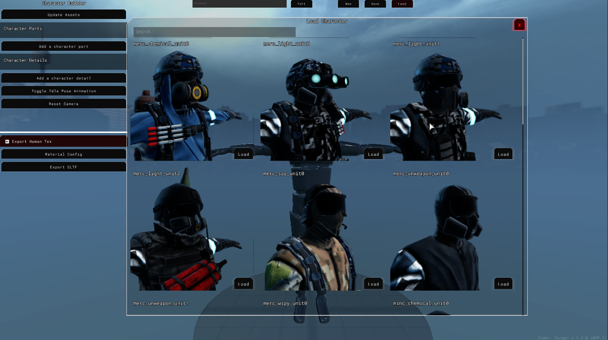
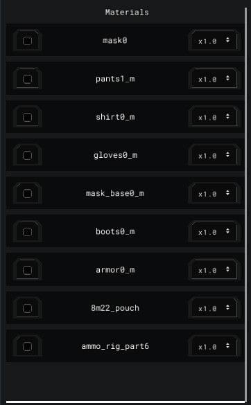
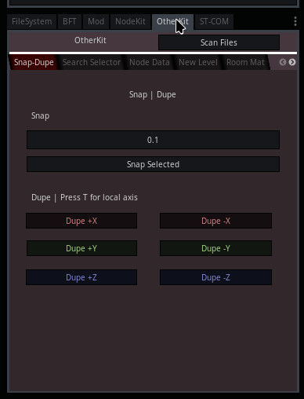
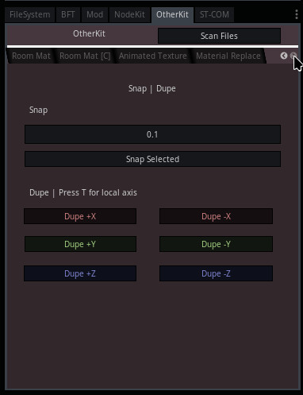
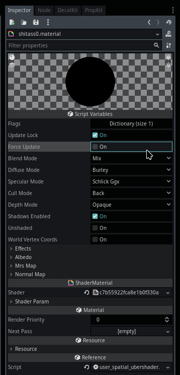
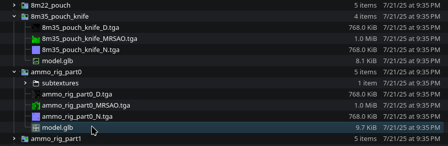
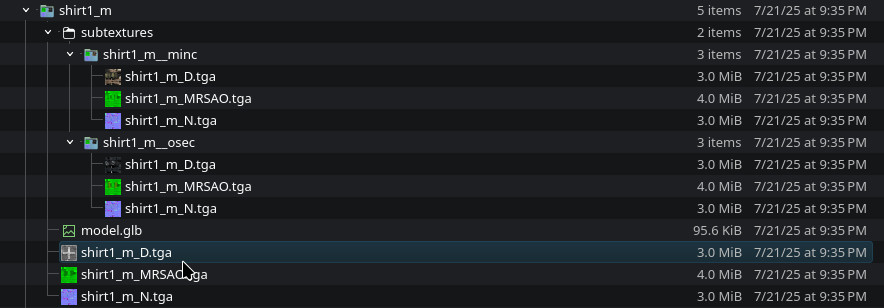

Module: character_builder
Documentation last edited: October 22, 2025 at 8:00 UTC
Description
Какова цель?
Character Builder предоставляет надёжный рабочий процесс для создания персонажей любой сложности. По сути, он работает как конструктор гуманоидных персонажей. Если ты когда-либо играл в GTA, ты probably использовал их систему одежды хотя бы раз, чтобы изменить внешний вид своего персонажа. В этом случае Character Builder довольно похож. Однако здесь он пригоден для создания моделей персонажей, которые later могут быть использованы для NPC или комиксных сцен. В данном случае...
- Character Builder предоставляет "части персонажа" для добавления элементов, влияющих на несколько костей. Это может быть довольно сложная одежда или снаряжение.
- "Детали персонажа" - это объекты, прикреплённые к кости (100% влияние веса кости на все вершины), например, подсумки для магазинов, рации, очки, мелкие переиспользуемые детали.
- Реалистичный превью движущегося персонажа, чтобы показать, как работают веса вершин.
- Возможность сохраниться и вернуться позже.
- Все ассеты могут загружаться в реальном времени, тебе не нужно ждать, пока Godot импортирует модели или текстуры.
- Поддержка субтекстур и редактирования материалов для ещё большего визуального контроля.
- Экспорт GLTF с минимальным количеством материалов за счёт создания комбинированного, оптимизированного текстурного атласа.
- Благодаря более модульному рабочему процессу, работа может быть разделена между несколькими художниками, работающими над разными частями/деталями.
- И, возможно, немного больше.
Как это делалось раньше? Какова была причина создания Character Builder?
Рабочий процесс был таким:
- Создать высокополигональную модель одежды, чтобы потом объединить в один меш.
- Быстрое, грязное создание низкополигональной модели с помощью Instant Meshes.
- UV развёртка, запекание, текстурирование, быстрый риггинг, та-да.
...
За 8 часов я мог сделать одного персонажа! Ну, не совсем 8 часов, иногда больше, если, например, нужно было сделать квадрупульные ПНВ. Этот рабочий процесс был *невероятно быстрым*, правда. Однако он страдал от проблем, которые были отталкивающими для меня как разработчика:
- Каждый персонаж требовал как минимум 8 часов работы, конечно, могло быть и меньше... но это приходилось оплачивать.
- Невозможно переиспользовать *любые* части уже существующих персонажей.
- Более высокий уровень детализации usually означал прохождение нескольких кругов ада. Хочешь прокатиться по аду?
- Моделирование твёрдых поверхностей (упомянутые ПНВ) довольно сложно.
- Практически невозможно вернуться и изменить *одну маленькую деталь* в модели.
- И так далее, если у тебя есть определённый опыт в моделировании, ты можешь назвать *ещё больше* таких пунктов.
Цель
Итак, как было сказано, Character Builder - это
"must-have"
, когда дело доходит до создания любых персонажей в этой игре отныне. Даже если альтернативные способы всё ещё доступны,
настоятельно рекомендуется
использовать этот инструмент вместо них. Он избавляет от множества проблем при компоновке одежды, переиспользовании деталей и, конечно, самое главное - он оптимизирует как рабочее время, так и производительность итоговых персонажей во время выполнения.
Чтобы использовать этот инструмент, просто перейди в локацию под названием
character_builder
, вот и всё. Имей в виду: эта локация
НЕ БУДЕТ работать в экспортированной игре
, поскольку она полагается на инструменты экспорта GLTF, которые
доступны только в редакторных сборках.
Техническая сторона
Во-первых, тебе нужно знать, что весь редактор практически сделан в одной сцене:
res://modules/character_builder/assets/editor_scenes/character_builder.tscn
. Конечно, он использует набор подсцен для более сложных частей, таких как контроллер камеры, персонаж, UI и gizmos.
Структура сцены

world_env
и
env
- эти два просто настраивают окружение для фона
cam_rotation
- контроллер камеры, простые управления, назначенные на правую кнопку мыши
character
- сам персонаж, представляет собой сложную модель со всеми мешами частей/деталей персонажа на ней, он также содержит логику экспорта в коде этого узла
ui_layer/editor_UI
- весь UI этого редактора, довольно сложная подсцена со всеми видами узлов, производных от
Control
position
и
rotation
- gizmos, используемые системой для перемещения объектов (в основном используются для деталей)
screenshot_viewport
- просто вьюпорт, который делает скриншоты для файлов сохранений персонажей
Структура файлов

res://modules/character_builder/assets/char_base/
- содержит заглушку гуманоидного персонажа
res://modules/character_builder/assets/editor_scenes/
- набор папок, относящихся к главной сцене редактора (включая саму сцену)
res://modules/character_builder/assets/editor_scenes/character/
- сцены, относящиеся к модели персонажа, в данном случае, сцена персонажа, а также сцена экспорта материалов
res://modules/character_builder/assets/editor_scenes/editor/
- общие штуки редактора, такие как контроллер камеры, эта папка содержит
camera.tscn
, которая работает как вью от первого лица в режиме noclip, однако она была сделана в первой версии этого инструмента и была удалена из-за неудобства использования в этом случае
res://modules/character_builder/assets/editor_scenes/editor_UI/
- содержит сцену UI редактора, а также папку, содержащую различные сложные элементы UI, используемые этим UI редактора, эта папка также содержит файл темы ресурса
res://modules/character_builder/assets/editor_scenes/editor_UI/parts/
- сложные части UI редактора, которые относятся к различным спискам, селекторам и, самое главное - окну комбайнера материалов
res://modules/character_builder/assets/textures/
- некоторые текстуры, используемые в основном UI
Этот модуль также содержит
скрытые папки
, которые будут рассмотрены в другом разделе этой документации.
Структура кода и принципы
В отличие от некоторых других похожих модулей, таких как
comics_renderer
, этот модуль пытается максимально использовать принцип "вызов вниз, сигнал вверх", чтобы избежать беспорядка в коде. К сожалению, это приводит к безумному количеству шаблонного кода, но в целом организация более-менее понятна. Даже если я хочу рассказать о каждом скрипте подробно, у них есть свои собственные страницы документации. Здесь я хотел бы указать на те, которые довольно важные для этого модуля, чтобы тебе было легче начать ориентироваться здесь.
res://modules/character_builder/src/character_builder.gd
- это основной скрипт в этой системе, он работает как скотч для модели персонажа и UI. Он соединяется со всеми сигналами этих двух и заставляет их общаться друг с другом через вызовы сигналов. Если модель персонажа изменила список частей, UI редактора будет обновлён соответственно. Если меню комбайнера материалов получило некоторые изменения, персонаж получит информацию об этом от этого основного скрипта, который получит эту информацию из сигнала. Вызов вниз, сигнал вверх - в этом цель всего этого скрипта. Конечно, он вышел за эти рамки, когда дело доходит до следующих пунктов:
- Управление вводом
- Синхронизация UI / Контроллера камеры (не принимать ввод, если курсор в UI)
- Логика выделения объектов (в основном используется для "деталей персонажа")
- Обработка логики сохранения/загрузки
Вся эта логика помогает сделать этот инструмент пригодным для использования конечным пользователем; Делает их счастливыми, понимаешь, удовлетворёнными этой жизнью, дополнительный дофамин в их мозгу, заставляет их забыть все неприятности, которые они испытали в этой жизни, ты понимаешь, о чём я.
res://modules/character_builder/src/editor_UI/editor_UI.gd
- это код UI редактора и, да, здесь не так уж много можно увидеть, это по сути полностью реализованный скрипт "вызов вниз, сигнал вверх", который соединяет все части вместе, предоставляя список сигналов, пригодных для использования
character_builder.gd
res://modules/character_builder/src/character/character.gd
- в некотором роде, своего рода сердце во всей этой системе. Это код, который работает с моделью персонажа, а именно:
- Организация/Обработка частей и деталей персонажа
- Экспорт в GLTF с комбинированными наборами текстур
- Работа с сохранением/загрузкой
Несмотря на то, что этот скрипт работает с экспортом, имей в виду: окно комбайнера материалов - это то, что делает экспорт возможным, только при правильной конфигурации
character.gd
может функционировать как экспортёр.
res://modules/character_builder/src/character/material_export.gd
- все наборы текстур рендерятся в отдельном
Viewport
, чтобы later быть объединёнными в
character.gd
. Этот важен, потому что материалы могут иметь разные конфигурации, и
material_export.gd
принудительно заставляет все материалы сохраняться в PBR набор, состоящий из карт "Diffuse", "Normal" и "MRS". Имей в виду, вся логика "объединения наборов текстур" размещена в
character.gd
, а не здесь.
res://modules/character_builder/src/editor_UI/parts/material_combiner.gd
- код для UI комбинирования материалов. Этот важно упомянуть, потому что это источник всей информации относительно комбинации наборов текстур; Он экспортирует данные, которые later используются
character.gd
res://modules/character_builder/src/autoload/character_builder_utilities.gd
- автозагрузка, также известная как
CharacterBuilderUtilities
, этот синглтон существует, чтобы покрыть основные потребности обработки моделей в этом модуле, которые требуются частям/деталям персонажа, а также определённым элементам UI
Для получения более подробной информации относительно других скриптов в этом модуле, пожалуйста, прочти документацию этих скриптов или загляни в их исходный код.
Скрытые папки

res://modules/character_builder/assets/
содержит набор скрытых папок. Godot игнорирует все папки, которые начинаются с точки, например,
.game_export
в частности. В этом случае Godot не будет импортировать любые файлы там, и они не будут видны в
FileSystem
. Помимо игнорирования шага импорта этого движка, есть ещё одна причина для такого дизайнерского решения: Этот проект содержит множество файлов, которые замедляют работу
FileSystem
, что приводит к гораздо более медленному обнаружению импортируемых файлов, более медленному времени сохранения и т.д. Более того, эта система полагается на загрузку ресурсов во время выполнения с помощью
CharacterBuilderUtilities.load_image_texture
и
PackedSceneGLTF.import_gltf_scene
как способ пропустить мучительную часть импорта ассетов Godot. Это также позволяет не закрывать приложение, если ты импортировал новую деталь, ты можешь просто перезагрузить ассеты, и это позволит тебе продолжать работу над своим персонажем.
Список скрытых папок:
.char_detail_sources
- содержит исходные файлы, относящиеся к деталям персонажа, включая файлы Blender, а также запечённые карты
.char_details
- экспортированные файлы всех деталей персонажа, которые загружаются системой для работы
.char_parts
- экспортированные файлы всех частей персонажа
.char_parts_sources
- исходные файлы частей персонажа (как
.char_detail_sources
)
.GLTF_exports
- все экспортированные персонажи, они всегда оказываются здесь при экспорте, даже если ты отключишь экспорт в модуль
human_model
.saved_characters
- файлы сохранений всех персонажей
Потенциальные случаи использования этих скрытых папок рассматриваются в разделе
Как ты можешь импортировать свои собственные ассеты? / Организация скрытых папок
на этой странице документации. Прокрути вниз, ты найдёшь это там.
Как использовать?
Начало
Чтобы начать использовать Character Builder, ты можешь переключиться на локацию под названием
character_builder
, введя консольную команду:
change_location character_builder
. Или, как альтернатива, ты можешь просто использовать дев-меню. В любом случае, как только ты переключишься на эту локацию, ты увидишь стандартную настройку.

Смена имени
Как только ты начнёшь работать над новым персонажем, тебе, возможно, потребуется сменить имя своего персонажа. Ты можешь сделать это, нажав кнопку "Edit" на верхней панели и введя имя своего персонажа. После того как ты нажмёшь "Apply", это изменит имя твоего персонажа.
Сохранение
Нажав save, ты сохранишь персонажа с этим именем. Если существуют файлы сохранений с таким же именем - они будут автоматически перезаписаны, так что будь осторожен.

Загрузка
Ты также можешь загрузить всех существующих персонажей, нажав кнопку "Load", в меню ты сможешь увидеть имена существующих персонажей, а также их превью для более лёгкого понимания, что это за персонаж.

Части персонажа
Когда ты создаёшь нового персонажа, тебе, возможно, понадобится добавить свою первую часть персонажа. Ты можешь сделать это, нажав кнопку "Add a character part" слева.

После нажатия этой кнопки ты увидишь меню всех доступных частей персонажа. Ты можешь добавлять любые части персонажа без каких-либо ограничений, если это соответствует твоему художественному видению. После того как ты добавишь часть персонажа, окно выбора НЕ закроется, позволяя тебе добавить несколько частей.

Если ты хочешь редактировать свойства своей новой части, ты можешь нажать кнопку
[o]
в списке частей слева.

Это даст тебе доступ к параметрам трансформации, а также к редактированию материалов. Нажав на кнопку редактирования материала, ты увидишь список свойств в окне "Material Editor", где ты можешь менять текстуры своей части или настраивать параметры материала согласно своему вкусу или потребностям. Если эта часть тебе больше не нужна, ты можешь просто нажать "Remove" в окне свойств.
Детали персонажа
Если ты закончил работать с частями персонажа любого вида, тебе, вероятнее всего, захочется поработать с деталями этого персонажа. Ты можешь сделать это, добавив их кнопкой "Add a character detail". Процесс *очень* похож на добавление частей персонажа, за исключением одного существенного различия, которое делает детали персонажа уникальным инструментом в руках художника. В отличие от частей персонажа, ты можешь выбирать детали, просто жмякая на них во вьюпорте Character Builder. Это даст тебе возможность использовать gizmos для позиционирования и вращения этих деталей. Таким образом, ты можешь добавлять подсумки для магазинов к своей разгрузке. Имей в виду, детали прикрепляются к конкретной кости (в отличие от частей, которые имеют множественные влияния). Когда ты выбираешь деталь, ты можешь указать группу костей и, как следствие: кость, к которой нужно прикрепить эту деталь. Ты можешь использовать кнопку "Toggle Idle Pose Animation" для воспроизведения тестовой анимации, чтобы узнать, как твои детали двигаются вместе с персонажем.

Экспорт
Когда ты закончил создание своего персонажа, тебе, наверное, захочется экспортировать этого персонажа для импорта в игру как "Модель человека". Однако тебе нужно понимать, что этот процесс состоит из нескольких шагов. Самые важные из них - "Конфигурация комбинирования материалов" и "Интеграция BlenderFastTools"
Экспорт - Конфигурация комбинирования материалов
Если ты попытаешься экспортировать модель персонажа сразу без конфигурации, ты получишь ошибку:
Export error: Please, configure material combining without errors.

В этом случае тебе нужно нажать кнопку "Material Config", она расположена слева.
Как только ты нажмёшь эту кнопку, ты увидишь высокоспециализированное нанотехнологичное не-ИИ чёртово шедевральное окно для размещения простых квадратных форм, чтобы превратить их в единый комбинированный бомбический оптимизированный высококачественный набор текстур.

Ах да, мне было так скучно писать эту штуку на данном этапе, что я не мог отказаться от добавления нескольких маркетинговых словечек, которые держали бы тебя вовлечённым... В любом случае, что я говорил... ты откроешь это окно, оно будет содержать список материалов слева.

Все эти материалы имеют checkbox, как только ты нажмёшь checkbox - этот материал появится в текстурированном поле.
Даже если ты можешь разместить одну текстуру поверх другой, имей в виду - UV будут размещены соответственно. Так что ты должен размещать их на своих уникальных местах без каких-либо пересечений. Если у тебя будут пересечения, ты увидишь предупреждение слева. Overlaps не остановят тебя от экспорта модели.
Ты можешь настроить размер отдельного материала слева, изменив значение "x1.0" на что-то другое.
И, если ты закончил с размещением своих материалов, ты также можешь изменить "Tex. Size Limit", чтобы изменить размер итоговой текстуры, если значение по умолчанию может быть слишком низким для твоих потребностей. Ты можешь установить лимит размера на максимальное значение, и система будет использовать только необходимое разрешение текстуры.

Как только ты закончил со всем, ты можешь нажать "Export GLTF", и это экспортирует твою модель. Имей в виду, что checkbox "Export Human Tex" экспортирует твои текстуры в папку модели человека, которая расположена по адресу
"res://modules/human_model/assets/models/
[CHARACTER_NAME_HERE]
"
.
Экспорт - Интеграция BlenderFastTools
Открой версию Blender, которая имеет полную поддержку плагина "BlenderFastTools". На данный момент 2.83 или 4.x - единственные совместимые версии. Перейди в окно "Scene Properties", прокрути вниз до конца раздела "BlenderFastTools".

Ты увидишь категорию под названием "Import Character", в которой есть много предупреждений, написанных на экстремально-радикально вежливом английском.

Нажми кнопку "Update character list", а затем выбери персонажа, которого хочешь импортировать, в панели "Character Builder import".

После нажатия "Import Character" ты импортируешь персонажа, созданного в Character Builder.

Импортированный персонаж разделён на части и детали. Ты можешь либо соединить всё вместе, нажав "A", а затем "Ctrl + J", либо настроить определённые части в режиме редактирования, чтобы они лучше подходили.

После соединения всего вместе тебе нужно переименовать единственный mesh-объект в "character".

После этого ты получишь доступ к категории "Human Model" (она находится выше в разделе), где ты можешь найти кнопку "Export character".

Прежде чем нажать эту кнопку, убедись, что ты сохранил свой .blend файл с подходящим именем персонажа, которого хочешь экспортировать. Настоятельно рекомендуется хранить все модели человеческих персонажей в
"res://.dev_sources/human_models/"
. Как только ты сохранил свой файл, ты можешь нажать "Export character", что автоматически экспортирует соответствующий GLTF файл в
"res://modules/human_model/assets/models/
[CHARACTER_NAME_HERE]
"
.

Финальная конфигурация
Убедись, что посетил эту папку в Godot, чтобы импортировать модели и настроить материалы, назначив им правильные значения и текстуры во всех слотах.

По умолчанию Godot импортирует материалы
SpatialMaterial
вместо
UserSpatialUbershader
, которые используются для всех материалов в этой игре. Во-первых - тебе нужно заменить
SpatialMaterial
на
UserSpatialUbershader
. Ты можешь просто удалить файл, создать новый ресурс (с тем же именем, заметь) и тогда всё будет круто. Однако это может быть слишком медленно, так что я хотел бы показать более лёгкий метод. Сначала скопируй путь к папке...

Затем открой меню
OtherKit
...

Кликни здесь несколько раз...

Найди вкладку "Material Replace", введи путь к папке, нажми "Replace"

Хотя это может показаться более сложным, чем делать это по-старинке, я лично нахожу это быстрее, потому что окно "Create a new resource" в этом проекте работает медленно, плюс я слишком ленив, чтобы "правильно" сохранять ресурс, тогда как этот инструмент помогает обнаружить любой
SpatialMaterial
и заменить их соответственно. Однако вернёмся к конфигурации. Когда ты получил в свои руки новый
UserSpatialUbershader
, тебе нужно включить эффекты... Также убедись, что изменил
Diffuse Mode
на
"Burley"
и
Specular Mode
на
"Schlick GGX"
...


Для большинства персонажей тебе понадобятся эффекты
Albedo
,
Normal Map
,
MRS
. Sometimes -
Emission
. Все эти эффекты будут более чем достаточными, чтобы сделать приличных персонажей любой сложности. После того как ты закончил включать эффекты, нажми
Force Update
, чтобы обновить шейдер в этом материале в соответствии с требованиями рендерера.

После того как ты обновил материал, ты можешь назначить текстуры в слоты. Имей в виду - изначально твой материал будет полностью чёрным, так что не забудь изменить
Albedo Color
на белый. Более того,
Normal Map Power
по умолчанию равен
0.0
, убедись, что изменил значение на
1.0
, чтобы normal map оказывал полное влияние на освещение этого материала. После всего этого - мистер Shitass0 должен выглядеть свежо и чисто.

Использование твоего нового крутого персонажа для NPC
Ладно, немного оффтопа здесь, поскольку это выходит за рамки этого модуля в целом... Но давай будем честны, ты был бы более чем счастлив увидеть своего нового крутого персонажа на определённом NPC в этой игре, верно? Так что давай сделаем это.
"res://modules/non_playable_character/assets/characters/"
содержит все конфиги NPC-персонажей этой игры, так что ты можешь найти класс по своему выбору. Давай отредактируем
agent
...

И затем ты просто редактируешь имя модели здесь, в этом массиве...

Как ты можешь импортировать свои собственные ассеты? / Организация скрытых папок
Как только ты встал на ноги и создал персонажа своей мечты, ты, скорее всего, задумаешься, как добавить пользовательские ассеты в этот инструмент. Это довольно легко, однако тебе нужно знать правила этой системы. Во-первых, ты можешь изучить быстрее, если изучишь уже существующие исходные файлы, размещённые в папках
"modules/character_builder/assets/.char_parts_sources/"
и
"modules/character_builder/assets/.char_detail_sources/"
, а также уже экспортированные
"modules/character_builder/assets/.char_parts/"
и
"modules/character_builder/assets/.char_details/"
. Изучая эти файлы, у тебя есть хороший шанс увидеть паттерны повсюду и отправиться в своего рода бэд-трип. Either way, я пишу это руководство, так что... Я полагаю мне всё равно нужно будет объяснить это.

Геометрия частей персонажа
Чтобы сделать proper кусок геометрии для твоей части персонажа, тебе сначала нужно получить proper "арматуру" в Blender.
"human_rig"
- это скелет, который используется всеми человеческими моделями и частями персонажей. Ты не можешь создать его самостоятельно, тебе нужно получить его откуда-то ещё. Ты можешь легко получить скелет, нажав "Import Human Armature" или импортировав персонажа, которого хотел бы разработать.

Как только ты получил арматуру (желательно с какой-нибудь геометрией гуманоидного персонажа), ты можешь создать свою часть персонажа. Обычно это так же просто, как создать геометрию поверх базовой человеческой меш-сетки. Я бы описал тебе детальное руководство о том, как делать модели здесь, но я бы предположил, что за твоей спиной годы опыта и ты сам знаешь, как делать эти штуки.

Когда ты закончил со своей моделью, убедись, что назвал свой mesh-объект
"char_part"
, таким образом BlenderFastTools обнаружит его как экспортируемую mesh-сетку части персонажа. Перед экспортом, пожалуйста, убедись, что у тебя есть правильные веса вершин (меш привязан к арматуре и деформируется ею корректно) и что имя материала - это то, с чем ты сможешь работать (и оно достаточно уникально, чтобы не вызывать конфликтов с другими частями/деталями). Настоятельно рекомендуется называть свои материалы так же, как ты называешь свою часть персонажа. Если ты делаешь "armor0_m", то назови свой материал "armor0_m", если материалов несколько - просто добавь номер в конце.

После проверки всего: Нажми
"Export character part"
в панели "Character Builder". Это экспортирует GLTF твоей части персонажа.

Однако тебе нужно подготовить текстуры. Все экспортированные текстуры должны следовать следующему pattern:
"
[matname]
_D.tga" # Diffuse / Color map
"
[matname]
_N.tga" # Normal map
"
[matname]
_MRS.tga" # Metal-Roughness-Specular packed map
"
[matname]
_E.tga" # Emission map
Сохраняй свои имена консистентными, если твой материал называется "armor0_m", тогда имя твоего файла изображения будет
"armor0_m_D.tga"
. Ты сохраняешь свои текстуры в папке экспортированной части персонажа. Чтобы найти свою экспортированную часть персонажа, перейди в
"modules/character_builder/assets/.char_parts/"
и найди папку с именем твоей части персонажа. Как только ты экспортируешь все текстуры туда, всё должно быть fine, ты можешь перейти в Character Builder, обновить ассеты и добавить свою часть персонажа.

Имей в виду, если что-то пошло не так - не закрывай Character Builder, ты можешь просто исправить файлы, переэкспортировать stuff и затем обновить ассеты в Character Builder.
Геометрия деталей персонажа
Это действительно похоже на экспорт частей персонажа, за исключением того, что детали персонажа не должны быть привязаны к какой-либо арматуре для экспорта, они могут иметь любой origin и т.д. По сути, они просто объекты, как пропсы локаций, но сделанные для модели персонажа. Все принципы, связанные с текстурами и экспортом, применяются и здесь, но ты просто используешь
"Export character detail"
. Это действительно всё, что тебе нужно знать. Для получения дополнительной информации, пожалуйста, перечитай.

Субтекстуры
Они работают прям как обычные текстуры, упомянутые выше, "main/default" текстуры, используемые для части/детали. Однако любая часть/деталь может получить вторичный набор этих текстур, и количество этих наборов может быть неограниченным. Чтобы сделать свою собственную субтекстуру, пожалуйста, создай/найди папку
"subtextures"
внутри директории твоей части/детали. Затем внутри создай папку со следующим правилом именования:
"
[mat_name]
__
[subtex_name]
"
. Например:
"armor0_m__osec"
. В этом случае имей в виду, что двойной символ подчёркивания помечает разделение между именем материала и именем набора суб-текстур. Имей в виду, эта система была разработана даже для тех моделей, которые могут иметь несколько материалов, так что включение имени материала сначала всегда требуется для proper функционирования этой системы. В качестве примера ты можешь изучить следующую директорию:
"modules/character_builder/assets/.char_parts/6b93_helmet_28x/subtextures/6b93_helmet__black/"
.

General Information
Root directories list
assets, docs, src
Nodes
CharacterBuilderUtilities
character_builder
character
material_export
camera_control
rotation_cam_control
text_log
CB_CharacterPart
CB_CharacterDetail
material_placement
texture_field
character_part_selector
material_combiner
character_parts_list
character_selector
editor_UI
Classes
Resources
CB_MaterialExportData
CB_SavedCharacter
Other Scripts
None